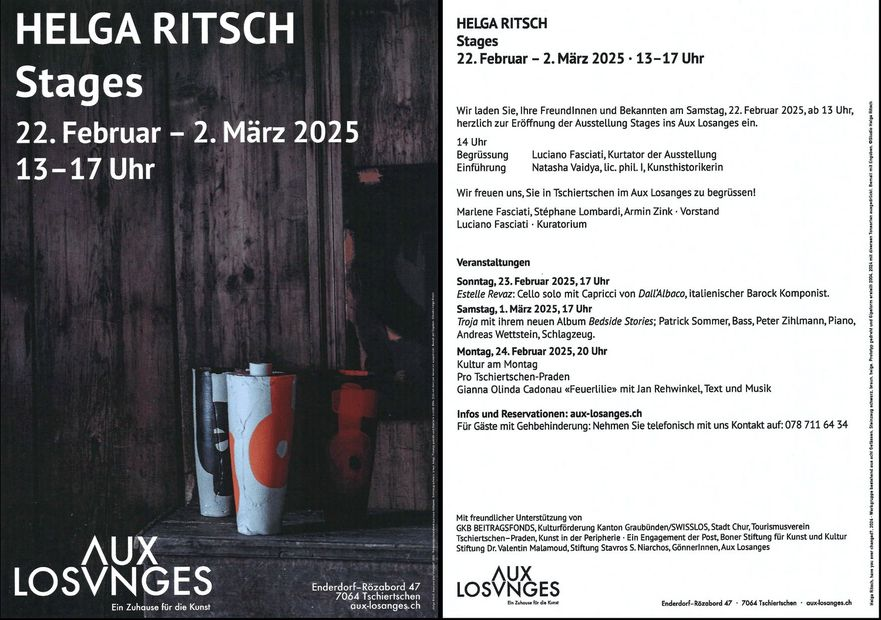
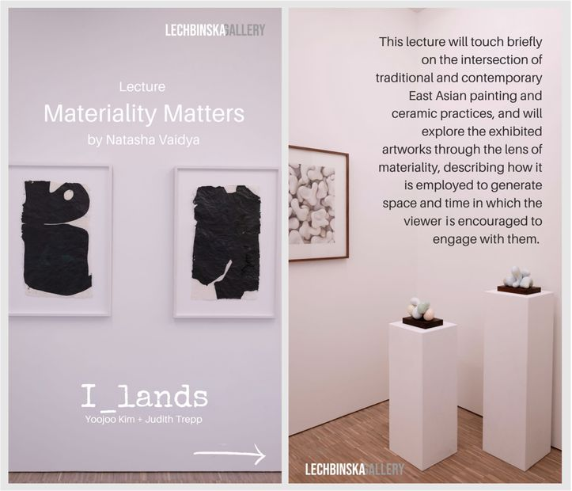
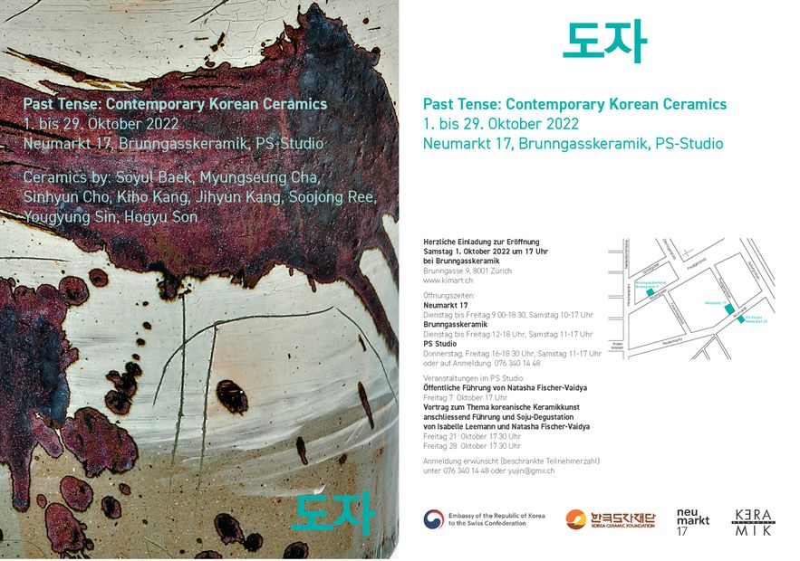
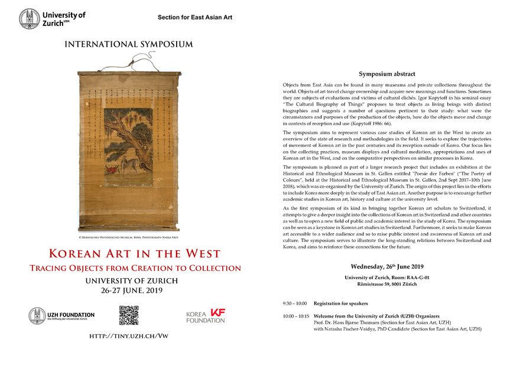
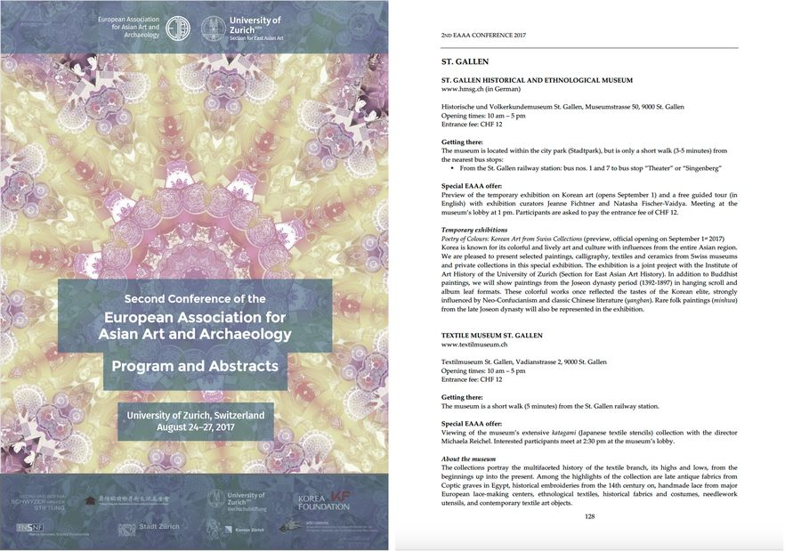
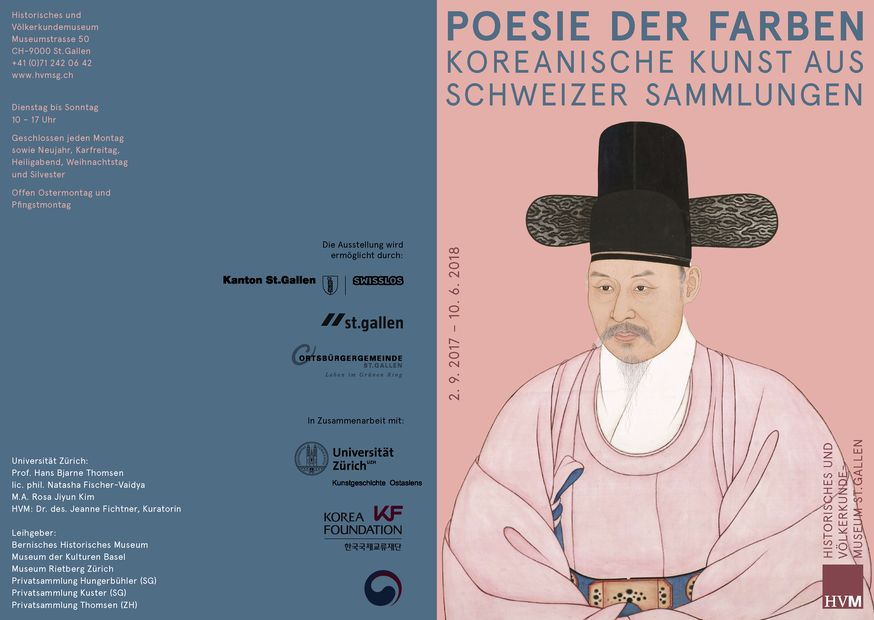
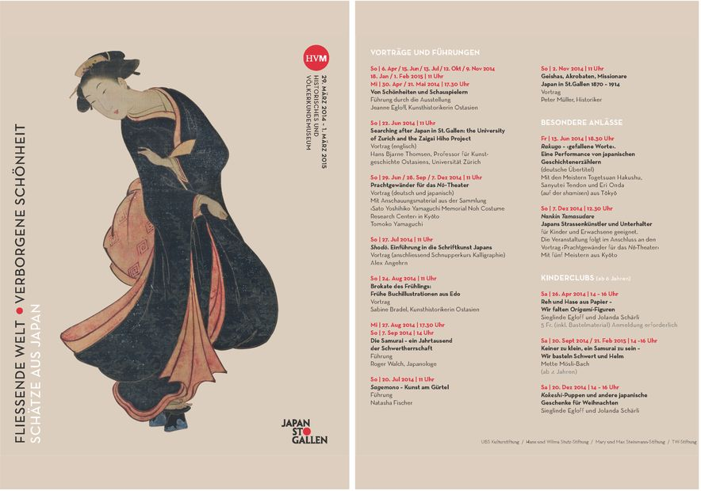

© 2023–2026 Natasha Vaidya

Introduction to the solo exhibition “stages” by Helga Ritsch, 22.02.2025 – 02.03.2025, Aux Losanges (Tschiertschen).

Lecture “Materiality Matters” for the exhibition “I_Lands / Islands”, 26.08.2023 – 26.09.2023, Lechbinska Gallery.
Works by Judith Trepp (paintings) and Yoojoo Kim (ceramics)

Guided Tours of the exhibition “Past Tense: Contemporary Korean Ceramics”, 01.10.2022 – 29.10.2022, curated by Yujin Kim.
With works by: Soyul Baek, Myungseung Cha, Sinhyun Cho, Kiho Kang, Jiyeon Kang, Sojoong Ree, Youkyung Sin, Hogyu Son

Symposium “Korean Art in the West. Tracing Objects from Creation to Collection”, 26-27 June 2019, University of Zurich.
Co-organised with Prof. Hans Bjarne Thomsen.
Individual paper presented on Swiss collectors of Korean Art.

Guided tour of the exhibition “Poetry of Colours. Korean Art from Swiss Collections”, 27.08.2017, Historical and Ethnological Museum of St. Gallen.
Offered as part of the Museum Sunday programme during the 2nd Conference of the European Association for Art and Archaeology (EAAA).

Exhibition “Poetry of Colours. Korean Art from Swiss Collections”, 02.09.2017 – 10.06.2018
Historical and Ethnographical Museum, St. Gallen

Guided Tour “Sagemono” in the exhibition “Floating World, Hidden Beauty – Treasures from Japan”, 21.07.2014
Historical and Ethnological Museum St. Gallen